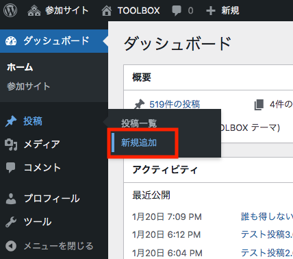
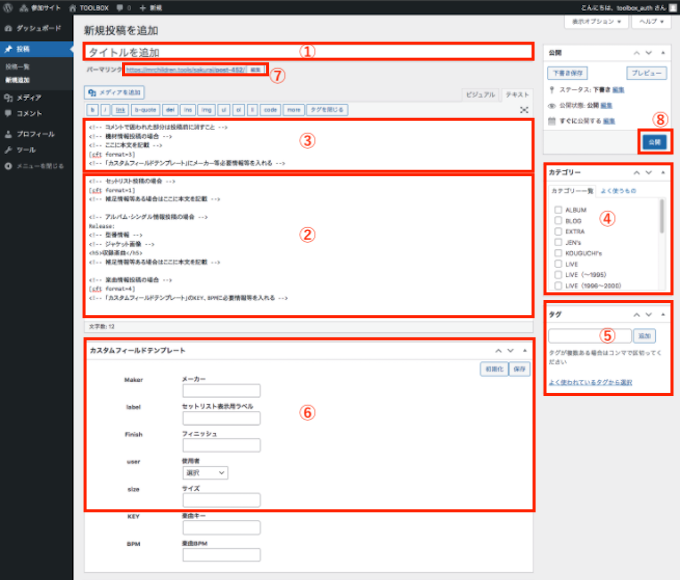
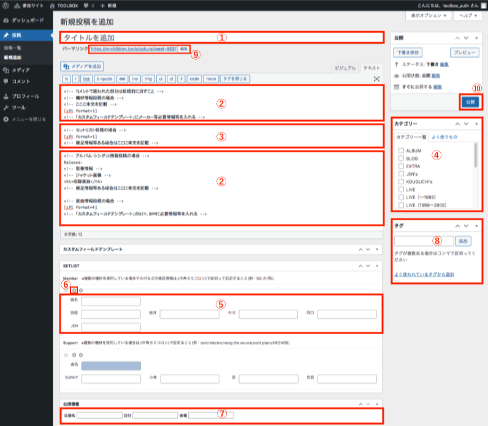

記事の新規投稿
楽器情報、ブログ等の投稿は、以下の手順で管理画面から行います。
■管理画面ログインURL
https://mrchildren.tools/wp-login.php
※ID・PWは、別途送付
ログイン後、管理画面左のメニューから「投稿→新規追加」をクリック。

■機材情報の場合

① タイトルを入力
② 不要な部分を削除
③ 本文を入力
④ 掲載カテゴリを選択
⑤ Finish/label※1/Makerを入力(その他の項目は任意)
⑥ 記事に関連する語句（タグ）を入力
⑦「パーマリンク」が表示されたら「編集」ボタンを押して「post」と入力※2
⑧「公開」ボタンをクリック
※1 セットリスト表示用ラベルは原則タイトルに入れた機材名と同じにしてください
※2 パーマリンクは、タイトルの入力内容に応じて自動で「post-〇〇〇」と割り当てられますが、タイトルが英数字の場合、そのまま英数字が小文字で反映されてしまうので、手動で「post」と打ち直してください。「post」と入れると、「post-100」のように自動で連番になります。
■セットリスト情報の場合

① タイトルを入力
② 不要な部分を削除
③ 補足情報があれば本文を入力
④ 掲載カテゴリを選択
⑤ 曲名/各メンバーの機材情報※1を入力※2
⑥「＋」ボタンを押して曲の入力フィールドを増やし、2曲目以降の情報を入力
⑦ 公演情報のフィールドを入力（日付の形式はYYYY-MM-DDとしてください）
⑧ 記事に関連する語句（タグ）を入力
⑨「パーマリンク」が表示されたら「編集」ボタンを押して「post」と入力
⑩「公開」ボタンをクリック
※1 機材名は機材カテゴリで投稿した「label」フィールドに入力された情報と統一してください。
※2 アンコールの区切りを入れる場合は「曲名」に"en"と入力しその他のフィールドは空欄にしたものを一行入れておくと、それ以降の曲はアンコールとして自動的に整形されます。